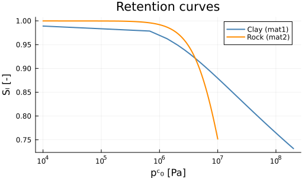
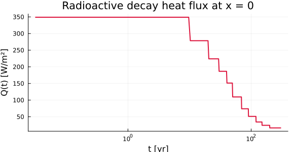
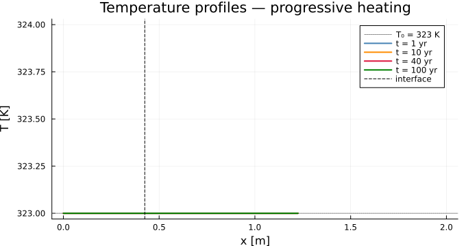
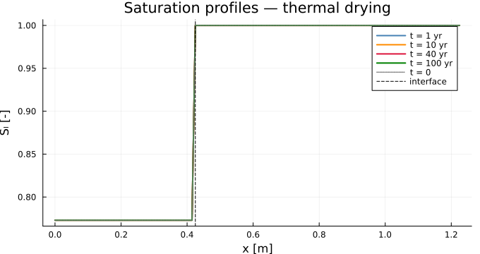

Non-isothermal Drying (M6)
Source:
examples/M6_drying/run.jlReference solution: non-isothermal drying of a two-material barrier.
Reference test case: engineered barrier — 2 materials: compacted clay + host rock
Physical problem
We simulate non-isothermal two-phase flow in an unsaturated porous barrier subjected to a radioactive heat source. The benchmark represents an engineered barrier of a radioactive waste repository: a compacted clay plug (inner zone) surrounded by a host rock formation.
Geometry and boundary conditions
x = 0 (left) x = 0.425 m x = L = 1.225 m (right)
heat flux Q(t) → (interface) Dirichlet pₗ, pₐ, T
│ │ │
│ COMPACTED CLAY (mat1) │ HOST ROCK (mat2) │
│ φ = 0.30 │ φ = 0.05 │
│ k = 1×10⁻²⁰ m² │ k = 1×10⁻¹⁹ m² │
│ λₛ = 1.12 W/(m·K) │ λₛ = 1.62 W/(m·K) │
x=0 x_int x=L
←── drying front ──────Boundary conditions:
| Boundary | Unknown | Condition | Value |
|---|---|---|---|
| $x = 0$ (left) | $T$ | Neumann | heat flux $Q(t)$ [W/m²] |
| $x = L$ (right) | $p_l$ | Dirichlet | $4.905 \times 10^6$ Pa |
| $x = L$ (right) | $p_a$ | Dirichlet | $4.892 \times 10^6$ Pa |
| $x = L$ (right) | $T$ | Dirichlet | $323$ K |
The heat flux at $x = 0$ models radioactive decay: it is decreasing with time (from ~350 W/m² at 10 yr to ~60 W/m² at 300 yr) and is supplied as a piecewise-linear table $F(t)$ [J/m²] from the reference case.
Initial conditions:
| Zone | $p_l$ (Pa) | $p_a$ (Pa) | $T$ (K) |
|---|---|---|---|
| Clay (mat1) | $-7.612 \times 10^7$ | $9.226 \times 10^4$ | 323 |
| Rock (mat2) | $4.905 \times 10^6$ | $4.892 \times 10^6$ | 323 |
The clay is initially strongly under-saturated ($p_c \approx 7.6 \times 10^7$ Pa, $S_l \approx 0.78$) while the host rock is nearly saturated ($p_c \approx 0$).
Governing equations
Primary unknowns
Three coupled unknowns per point:
\[\mathbf{u} = (p_l,\; p_a,\; T)\]
Derived pressures
The vapor pressure is given by the modified Kelvin equation coupling pore liquid pressure, temperature, and enthalpies of phase change:
\[p_v = p_{v0}\,\exp\!\left(\frac{M_v/R}{T}\left[ \frac{p_l - p_{l0}}{\rho_l} + \frac{L_0\,\theta}{T_0} + (C_{pl} - C_{pv})\left(\theta - T\ln\frac{T}{T_0}\right) \right]\right), \qquad \theta = T - T_0\]
\[p_g = p_v + p_a, \qquad p_c = p_g - p_l, \qquad p_{c0} = \frac{p_c}{1 - \alpha\,\theta}\]
The reduced capillary pressure $p_{c0}$ accounts for the thermal shift of the retention curves ($\alpha = 3 \times 10^{-3}$ K$^{-1}$).
Conservation equations
Total water (liquid + vapor):
\[\frac{\partial}{\partial t}\!\left(\rho_l\,\phi\,S_l + \rho_v\,\phi\,S_g\right) + \nabla \cdot (\mathbf{W}_l + \mathbf{W}_v) = 0\]
Dry air:
\[\frac{\partial}{\partial t}\!\left(\rho_a\,\phi\,S_g\right) + \nabla \cdot \mathbf{W}_a = 0\]
Entropy balance (equivalent to the energy balance):
\[\frac{\partial S_{\rm sys}}{\partial t} + \nabla \cdot \mathbf{J}_s = 0\]
Fluxes
Liquid Darcy flux (zero gravity):
\[\mathbf{W}_l = -K_l\,\nabla p_l, \qquad K_l = \frac{\rho_l\,k_{\rm int}\,k_{rl}(p_{c0})}{\mu_l}\]
Vapor flux (Darcy + Fick):
\[\mathbf{W}_v = -K_{D,v}\,\nabla p_g - K_{F,v}\,\nabla c_v\]
Dry air flux (symmetric to vapor):
\[\mathbf{W}_a = -K_{D,a}\,\nabla p_g - K_{F,a}\,\nabla c_a\]
The binary diffusivity (Millington-Quirk tortuosity model):
\[D_{\rm eff} = \phi\,S_g\,\tau\,D_{av}, \quad \tau = \phi^{1/3}\,S_g^{7/3}, \quad D_{av} = D_{av0}\,\frac{p_{v0}+p_{a0}}{p_g}\left(\frac{T}{T_0}\right)^{1.88}\]
Total entropy flux:
\[\mathbf{J}_s = \frac{\mathbf{Q}}{T} + s_l\,\mathbf{W}_l + s_v\,\mathbf{W}_v + s_a\,\mathbf{W}_a, \qquad \mathbf{Q} = -K_{\rm TH}\,\nabla T\]
The thermal conductivity uses the geometric mean (Johansen):
\[K_{\rm TH} = \lambda_s^{1-\phi}\,\lambda_l^{\phi S_l}\,\lambda_g^{\phi S_g}\]
Entropy storage term
The volumetric entropy of the system is:
\[S_{\rm sys} = C_s\ln\frac{T}{T_0} - \phi\!\int_0^{p_c}\frac{\partial S_l}{\partial T}(p_c')\,\mathrm{d}p_c' + M_l\,s_l + M_v\,s_v + M_a\,s_a\]
The capillary entropy integral $\int_0^{p_c} \partial S_l/\partial T\,\mathrm{d}p_c'$ is evaluated by 3-point Gauss quadrature.
Why the entropy flux contains $s_v \mathbf{W}_v$: the Philip & de Vries effect
The specific entropy of vapor is dominated by the latent heat term:
\[s_v = C_{pv}\ln\frac{T}{T_0} - \frac{\ln(p_v/p_{v0})}{M_v/R} + \frac{L_0}{T_0}\]
At $T = 323$ K this gives $s_v \approx 8360$ J/(kg·K).
compared to $s_l \approx 406$ J/(kg·K) for liquid water. The vapor carries 21 × more entropy per kg than liquid, so even its small mass flux significantly amplifies the apparent thermal conductivity — this is the thermal vapor distillation effect (Philip & de Vries, 1957).
Retention curves
The $S_l(p_c)$ and $k_{rl}(p_c)$ curves are defined analytically.
Mat1 — Compacted clay:
\[S_l = \left(1 + \left(\frac{p_c}{1.5 \times 10^6}\right)^{1.0638}\right)^{-0.06}, \qquad k_{rl} = \left(1 + \left(\frac{p_c}{3 \times 10^6}\right)^2\right)^{-1/2}\]
Mat2 — Host rock:
\[S_l = \left(1 + \left(\frac{p_c}{10^7}\right)^{1.7}\right)^{-0.4117}, \qquad k_{rl} = \left(1 + \left(\frac{p_c}{10^7}\right)^2\right)^{-1}\]
Gas relative permeability (common to both):
\[k_{rg} = (1 - S_l)^2\,(1 - S_l^{5/3})\]
Regularization near $S_l = 1$ for $p_c < p_{c3}$ (exponential blending):
\[S_l(p_c) = 1 - \bigl(1 - S_l^{\rm raw}(p_{c3})\bigr)\,\exp\!\left(\frac{p_c - p_{c3}}{p_{c3}}\right) \quad \text{for } p_c < p_{c3}\]
with $p_{c3} = 10^6$ Pa (clay) and $p_{c3} = 2 \times 10^5$ Pa (rock).
Parameters
| Symbol | Value | Unit | Description |
|---|---|---|---|
| $\rho_l$ | 1000 | kg/m³ | Liquid density |
| $\mu_l$ | $10^{-3}$ | Pa·s | Liquid viscosity |
| $\mu_g$ | $1.8 \times 10^{-5}$ | Pa·s | Gas viscosity |
| $M_v/R$ | $2.16 \times 10^{-3}$ | kg/J | Vapor gas constant |
| $M_a/R$ | $3.46 \times 10^{-3}$ | kg/J | Air gas constant |
| $p_{v0}$ | 2460 | Pa | Saturated vapor pressure at $T_0$ |
| $T_0$ | 293 | K | Reference temperature |
| $D_{av0}$ | $2.48 \times 10^{-3}$ | m²/s | Binary air-vapor diffusivity |
| $\lambda_l$ | 0.6 | W/(m·K) | Liquid thermal conductivity |
| $\lambda_g$ | 0.026 | W/(m·K) | Gas thermal conductivity |
| $L_0$ | $2.45 \times 10^6$ | J/kg | Latent heat of vaporization |
| $\alpha$ | $3 \times 10^{-3}$ | K$^{-1}$ | Thermal shift coefficient for $S_l$ |
PoroMechanics.jl implementation
Model definition
using PoroMechanics
using VoronoiFVM
using ExtendableGrids
using Plots
using Printf
struct M6Mat
phi::Float64; k_int::Float64; lam_s::Float64
C_s::Float64; p_c3::Float64; mat_type::Int
end
Base.@kwdef struct M6Model <: AbstractPoroModel
rho_l::Float64 = 1000.0; mu_l::Float64 = 1.0e-3; mu_g::Float64 = 1.8e-5
M_vsR::Float64 = 0.00216; M_asR::Float64 = 0.00346
p_l0::Float64 = 1.0e5; p_v0::Float64 = 2460.0; p_a0::Float64 = 97540.0
T_0::Float64 = 293.0; D_av0::Float64 = 0.00248
lam_l::Float64 = 0.6; lam_g::Float64 = 0.026
C_pl::Float64 = 4180.0; C_pv::Float64 = 1800.0; C_pa::Float64 = 1000.0
L_0::Float64 = 2.45e6; alpha_T::Float64 = 0.003
x_int::Float64 = 0.425; L::Float64 = 1.225
mat1::M6Mat = M6Mat(0.30, 1.0e-20, 1.12, 2.3e6, 1.0e6, 1) # compacted clay
mat2::M6Mat = M6Mat(0.05, 1.0e-19, 1.62, 2.0e6, 2.0e5, 2) # host rock
p_l_ini1::Float64 = -7.611655e7; p_a_ini1::Float64 = 9.225595e4
p_l_ini2::Float64 = 4.905e6; p_a_ini2::Float64 = 4.891671e6
T_ini::Float64 = 323.0
end
PoroMechanics.nspecies(::M6Model) = 3
PoroMechanics.species_names(::M6Model) = [:p_l, :p_a, :T]
const U_PL = 1; const U_PA = 2; const U_TEM = 3Retention curves
Sl_raw1(pc) = pc <= 0 ? 1.0 : (1.0 + (pc/1.5e6)^1.06383)^(-0.06)
Sl_raw2(pc) = pc <= 0 ? 1.0 : (1.0 + (pc/10.0e6)^1.7)^(-0.4117)
krl1(pc) = pc <= 0 ? 1.0 : (1.0 + (pc/3.0e6)^2)^(-0.5)
krl2(pc) = pc <= 0 ? 1.0 : (1.0 + (pc/10.0e6)^2)^(-1.0)
krg_fn(sl) = sl >= 1 ? 0.0 : (1-clamp(sl,0,1-1e-12))^2 * (1-clamp(sl,0,1-1e-12)^(5/3))
function Sl_reg(pc, p_c3, Sl_raw)
pc <= 0 && return 1.0
pc >= p_c3 && return Sl_raw(pc)
return 1.0 - (1.0 - Sl_raw(p_c3)) * exp((pc - p_c3) / p_c3)
end
Sl_m(mat::M6Mat, pc) = mat.mat_type == 1 ? Sl_reg(pc, mat.p_c3, Sl_raw1) :
Sl_reg(pc, mat.p_c3, Sl_raw2)
krl_m(mat::M6Mat, pc) = mat.mat_type == 1 ? krl1(pc) : krl2(pc)
m0 = M6Model()
pc_clay = range(1e4, 2e8; length=300)
pc_rock = range(1e4, 1e7; length=300)
p_sl = plot(; xlabel="pᶜ₀ [Pa]", ylabel="Sₗ [-]", title="Retention curves",
xscale=:log10, legend=:topright, size=(520,300))
plot!(p_sl, pc_clay, Sl_m.(Ref(m0.mat1), pc_clay); lw=2, color=:steelblue, label="Clay (mat1)")
plot!(p_sl, pc_rock, Sl_m.(Ref(m0.mat2), pc_rock); lw=2, color=:darkorange, label="Rock (mat2)")
p_sl
Kelvin equation and heat flux
function p_vapor(m::M6Model, pl, T)
θ = T - m.T_0
m.p_v0 * exp(m.M_vsR / T * (
(pl - m.p_l0) / m.rho_l + m.L_0 * θ / m.T_0
+ (m.C_pl - m.C_pv) * (θ - T * log(T / m.T_0))))
end
# Verify: p_v(p_l0, T_0) must equal p_v0
@printf("p_v(p_l0, T_0) = %.2f Pa (expected %.2f Pa)\n", p_vapor(m0, m0.p_l0, m0.T_0), m0.p_v0)
# Radioactive decay heat flux Q(t)
const _t_F = [0.0, 3.1536e8, 6.3072e8, 9.4608e8, 1.26144e9, 1.5768e9,
2.20752e9, 2.83824e9, 3.78432e9, 4.7304e9, 6.3072e9, 9.4608e9]
const _F_val = [0.0, 1.1006064e11, 1.978884e11, 2.6852904e11, 3.2734368e11,
3.7504188e11, 4.4410572e11, 4.90779e11, 5.3902908e11,
5.71526928e11, 6.09764328e11, 6.61641048e11]
function heat_flux(t)
t <= 0 && return 0.0; t >= _t_F[end] && return (_F_val[end]-_F_val[end-1])/(_t_F[end]-_t_F[end-1])
for i in 2:lastindex(_t_F); t <= _t_F[i] && return (_F_val[i]-_F_val[i-1])/(_t_F[i]-_t_F[i-1]); end
0.0
end
yr = 3.1536e7
t_v = range(1e6, 9.5e9; length=500)
plot(t_v ./ yr, heat_flux.(t_v);
xlabel="t [yr]", ylabel="Q(t) [W/m²]",
title="Radioactive decay heat flux at x = 0",
xscale=:log10, lw=2, color=:crimson, legend=false, size=(580,300))
VoronoiFVM callbacks
# Gauss quadrature (3-point) for the capillary entropy integral
const gauss_a = (0.93246951420, 0.66120938646, 0.23861918608)
const gauss_w = (0.17132449237, 0.36076157304, 0.46791393457)
function dSl_raw1_fn(pc); pc <= 0 && return 0.0; u=(pc/1.5e6)^1.06383; -0.06*(1+u)^(-1.06)*1.06383*u/pc; end
function dSl_raw2_fn(pc); pc <= 0 && return 0.0; u=(pc/10e6)^1.7; -0.4117*(1+u)^(-1.4117)*1.7*u/pc; end
function dSl_reg(pc,p_c3,Sl_raw,dSl_raw); pc<=0&&return 0.0; pc>=p_c3&&return dSl_raw(pc); -(1-Sl_raw(p_c3))*exp((pc-p_c3)/p_c3)/p_c3; end
dSl_m(mat::M6Mat, pc) = mat.mat_type==1 ? dSl_reg(pc,mat.p_c3,Sl_raw1,dSl_raw1_fn) : dSl_reg(pc,mat.p_c3,Sl_raw2,dSl_raw2_fn)
get_mat(m::M6Model, x) = x < m.x_int ? m.mat1 : m.mat2
function compute_dUsdT(m::M6Model, mat, pc, θ)
pc <= 0 && return 0.0; at = 1 - m.alpha_T*θ; at<=0 && return 0.0
h = pc/2; dU = 0.0
for j in 1:3
for xi in [h*(1+gauss_a[j]), h*(1-gauss_a[j])]
pc0 = xi/at; dU += gauss_w[j] * dSl_m(mat, pc0) * pc0 * m.alpha_T / at
end
end
dU * h
end
function PoroMechanics.storage!(f, u, node, m::M6Model, ::Any)
mat=get_mat(m,node.coord[1]); φ=mat.phi; Cs=mat.C_s
pl=u[U_PL]; pa=u[U_PA]; T=u[U_TEM]; θ=T-m.T_0
pv=p_vapor(m,pl,T); pc=pv+pa-pl; at=1-m.alpha_T*θ; pc0=pc/at
sl=Sl_m(mat,pc0); sg=1-sl
ρv=pv*m.M_vsR/T; ρa=pa*m.M_asR/T
Ml=m.rho_l*φ*sl; Mv=ρv*φ*sg; Ma=ρa*φ*sg
s_l=m.C_pl*log(T/m.T_0)
s_v=m.C_pv*log(T/m.T_0)-log(pv/m.p_v0)/m.M_vsR+m.L_0/m.T_0
s_a=m.C_pa*log(T/m.T_0)-log(pa/m.p_a0)/m.M_asR
dU=compute_dUsdT(m,mat,pc,θ)
f[U_PL]=Ml+Mv; f[U_PA]=Ma
f[U_TEM]=Cs*log(T/m.T_0)-φ*dU+Ml*s_l+Mv*s_v+Ma*s_a
end
function PoroMechanics.flux!(f, u, edge, m::M6Model, ::Any)
x_m=(edge.coord[1,1]+edge.coord[1,2])/2; mat=get_mat(m,x_m)
φ=mat.phi; ki=mat.k_int; λs=mat.lam_s
pl1,pl2=u[U_PL,1],u[U_PL,2]; pa1,pa2=u[U_PA,1],u[U_PA,2]; T1,T2=u[U_TEM,1],u[U_TEM,2]
plm=(pl1+pl2)/2; pam=(pa1+pa2)/2; Tm=(T1+T2)/2
θm=Tm-m.T_0; at=1-m.alpha_T*θm
pvm=p_vapor(m,plm,Tm); pgm=pvm+pam; pcm=pgm-plm; pc0m=pcm/at
slm=Sl_m(mat,pc0m); sgm=1-slm
ρvm=pvm*m.M_vsR/Tm; ρam=pam*m.M_asR/Tm; ρgm=ρvm+ρam; cvm=ρvm/ρgm; cam=1-cvm
Kl=m.rho_l*ki/m.mu_l*krl_m(mat,pc0m); krg=krg_fn(slm)
KDv=ρvm*ki/m.mu_g*krg; KDa=ρam*ki/m.mu_g*krg
τ=φ^(1/3)*max(sgm,0)^(7/3); Dav=m.D_av0*(m.p_v0+m.p_a0)/pgm*(Tm/m.T_0)^1.88
Def=φ*sgm*τ*Dav; KFv=ρgm*Def; KFa=KFv
bar=Def*cvm*cam/Tm; KDv+=bar*(m.M_asR-m.M_vsR); KDa+=bar*(m.M_vsR-m.M_asR)
KTH=λs^(1-φ)*m.lam_l^(φ*slm)*m.lam_g^(φ*sgm)
pv1=p_vapor(m,pl1,T1); pg1=pv1+pa1; pv2=p_vapor(m,pl2,T2); pg2=pv2+pa2
ρg1=pv1*m.M_vsR/T1+pa1*m.M_asR/T1; ρg2=pv2*m.M_vsR/T2+pa2*m.M_asR/T2
cv1=pv1*m.M_vsR/T1/ρg1; ca1=1-cv1; cv2=pv2*m.M_vsR/T2/ρg2; ca2=1-cv2
Wl=Kl*(pl1-pl2); Wv=KDv*(pg1-pg2)+KFv*(cv1-cv2); Wa=KDa*(pg1-pg2)+KFa*(ca1-ca2)
s_lm=m.C_pl*log(Tm/m.T_0)
s_vm=m.C_pv*log(Tm/m.T_0)-log(pvm/m.p_v0)/m.M_vsR+m.L_0/m.T_0
s_am=m.C_pa*log(Tm/m.T_0)-log(pam/m.p_a0)/m.M_asR
f[U_PL]=Wl+Wv; f[U_PA]=Wa; f[U_TEM]=KTH/Tm*(T1-T2)+s_lm*Wl+s_vm*Wv+s_am*Wa
end
mutable struct M6Data; t::Float64; end
function PoroMechanics.bcondition!(f, u, node, m::M6Model, data)
boundary_dirichlet!(f,u,node; species=U_PL, region=2, value=m.p_l_ini2)
boundary_dirichlet!(f,u,node; species=U_PA, region=2, value=m.p_a_ini2)
boundary_dirichlet!(f,u,node; species=U_TEM, region=2, value=m.T_ini)
if node.region == 1
Q = heat_flux(data.t)
boundary_neumann!(f,u,node; species=U_TEM, region=1, value=Q/max(u[U_TEM],200.0))
end
endSimulation
m = M6Model()
Nx1, Nx2 = 43, 80
x1 = collect(range(0.0, m.x_int; length=Nx1))
x2 = collect(range(m.x_int, m.L; length=Nx2))
x_all = vcat(x1, x2[2:end])
grid = simplexgrid(x_all)
grid[CellRegions][1:Nx1-1] .= 1
grid[CellRegions][Nx1:end] .= 2
data = M6Data(0.0)
_storage!(f,u,node,d) = PoroMechanics.storage!(f,u,node,m,d)
_flux!(f,u,edge,d) = PoroMechanics.flux!(f,u,edge,m,d)
_bcond!(f,u,node,d) = PoroMechanics.bcondition!(f,u,node,m,d)
sys = VoronoiFVM.System(grid;
storage=_storage!, flux=_flux!, bcondition=_bcond!,
species=[U_PL,U_PA,U_TEM], data=data)
inival = unknowns(sys)
for i in eachindex(x_all)
if x_all[i] < m.x_int
inival[U_PL,i]=m.p_l_ini1; inival[U_PA,i]=m.p_a_ini1
else
inival[U_PL,i]=m.p_l_ini2; inival[U_PA,i]=m.p_a_ini2
end
inival[U_TEM,i] = m.T_ini
end
inival[U_PL,end]=m.p_l_ini2; inival[U_PA,end]=m.p_a_ini2
ctrl = VoronoiFVM.SolverControl(;
Δt=1e2, Δt_max=3.1536e7, Δt_min=1e-2,
Δu_opt=1e4, reltol=1e-6, abstol=1e-10, verbose=false)
tsave = [0.0, yr, 2yr, 4yr, 6yr, 8yr, 10yr, 20yr, 40yr, 50yr, 100yr]
# Wrapping the loop in `let` avoids Julia's global-scope variable shadowing
# (assigning to `u` inside a for loop would otherwise create a new local).
results = let u = copy(inival)
res = Tuple{Float64, Matrix{Float64}}[]
for k in 2:lastindex(tsave)
data.t = tsave[k]
seg = solve(sys; inival=u, times=[tsave[k-1], tsave[k]], control=ctrl)
u = seg[:,:,end]
push!(res, (tsave[k], copy(u)))
end
res
end
@printf("Done: %d time segments\n", length(results))Done: 10 time segmentsResults
Temperature profiles
times_plot = [1yr, 10yr, 40yr, 100yr]
colors_t = [:steelblue, :darkorange, :crimson, :green]
p_T = plot(; xlabel="x [m]", ylabel="T [K]",
title="Temperature profiles — progressive heating",
legend=:topright, size=(680, 360))
hline!(p_T, [m.T_ini]; lw=1, ls=:dot, color=:grey, label="T₀ = 323 K")
for (k, t_tgt) in enumerate(times_plot)
idx = argmin(abs.([r[1] for r in results] .- t_tgt))
plot!(p_T, x_all, results[idx][2][U_TEM, :];
lw=2, color=colors_t[k], label="t = $(round(Int,t_tgt/yr)) yr")
end
vline!(p_T, [m.x_int]; lw=1, ls=:dash, color=:black, label="interface")
p_T
Saturation profiles
p_sl2 = plot(; xlabel="x [m]", ylabel="Sₗ [-]",
title="Saturation profiles — thermal drying",
legend=:topright, size=(680, 360))
for (k, t_tgt) in enumerate(times_plot)
idx = argmin(abs.([r[1] for r in results] .- t_tgt))
u = results[idx][2]
sl_prof = [begin
pl=u[U_PL,i]; pa=u[U_PA,i]; T=u[U_TEM,i]
pv=p_vapor(m,pl,T); pc0=(pv+pa-pl)/(1-m.alpha_T*(T-m.T_0))
Sl_m(get_mat(m,x_all[i]), pc0)
end for i in eachindex(x_all)]
plot!(p_sl2, x_all, sl_prof; lw=2, color=colors_t[k], label="t = $(round(Int,t_tgt/yr)) yr")
end
sl_ini = [begin
pl=inival[U_PL,i]; pa=inival[U_PA,i]; T=inival[U_TEM,i]
pv=p_vapor(m,pl,T); pc0=(pv+pa-pl)/(1-m.alpha_T*(T-m.T_0))
Sl_m(get_mat(m,x_all[i]), pc0)
end for i in eachindex(x_all)]
plot!(p_sl2, x_all, sl_ini; lw=1.5, ls=:dot, color=:grey, label="t = 0")
vline!(p_sl2, [m.x_int]; lw=1, ls=:dash, color=:black, label="interface")
p_sl2
Summary at the clay/rock interface
i_int = argmin(abs.(x_all .- m.x_int))
i_mid2 = argmin(abs.(x_all .- 0.825))
println("t (yr) | pₗ[int] (Pa) | T[int] (K) | Sₗ[int] (-) | T[0.825m] (K)")
println("-"^72)
for (t, u) in results
pl=u[U_PL,i_int]; pa=u[U_PA,i_int]; T=u[U_TEM,i_int]
pv=p_vapor(m,pl,T); pc0=(pv+pa-pl)/(1-m.alpha_T*(T-m.T_0))
sl=Sl_m(get_mat(m,x_all[i_int]),pc0)
@printf("%5.0f | %+14.4e | %10.3f | %11.6f | %10.3f\n",
t/yr, pl, T, sl, u[U_TEM,i_mid2])
endt (yr) | pₗ[int] (Pa) | T[int] (K) | Sₗ[int] (-) | T[0.825m] (K)
------------------------------------------------------------------------
1 | +4.9050e+06 | 323.000 | 1.000000 | 323.000
2 | +4.9050e+06 | 323.000 | 1.000000 | 323.000
4 | +4.9050e+06 | 323.000 | 1.000000 | 323.000
6 | +4.9050e+06 | 323.000 | 1.000000 | 323.000
8 | +4.9050e+06 | 323.000 | 1.000000 | 323.000
10 | +4.9050e+06 | 323.000 | 1.000000 | 323.000
20 | +4.9050e+06 | 323.000 | 1.000000 | 323.000
40 | +4.9050e+06 | 323.000 | 1.000000 | 323.000
50 | +4.9050e+06 | 323.000 | 1.000000 | 323.000
100 | +4.9050e+06 | 323.000 | 1.000000 | 323.000Key points
- Entropy formulation — the thermal equation is written as an entropy balance rather than an energy balance, following Dangla (1998). This eliminates the need for a divergence term in the energy equation and simplifies the coupling with mass balances.
- Philip & de Vries vapor term —
s_v * Wvin the entropy flux captures latent-heat transport by vapor. At $S_l \approx 0.78$ in the clay, this can increase the apparent thermal conductivity by 10–30%. - Automatic Jacobian — VoronoiFVM uses
ForwardDiff.jlto compute the full $6 \times 6$ Jacobian block per edge automatically, so no analytical Jacobian is written by hand. - Two-material dispatch — material properties are selected at runtime by
get_mat(m, x), which returnsm.mat1orm.mat2depending on the node or edge position. This avoids any conditional branching inside the hot loops. - Bi-material interface — the very different retention curves (clay vs. rock) create a saturation jump at $x = 0.425$ m. The clay remains much wetter than the rock for the same capillary pressure.
References
- Dangla, P. (1998). Couplages hygro-mécaniques dans les milieux poreux non saturés. Thèse ENPC, Paris.
- Philip, J.R. & de Vries, D.A. (1957). Moisture movement in porous materials under temperature gradients. Trans. Am. Geophys. Union, 38(2), 222–232.
- van Genuchten, M.Th. (1980). A closed-form equation for predicting the hydraulic conductivity of unsaturated soils. Soil Sci. Soc. Am. J., 44, 892–898.